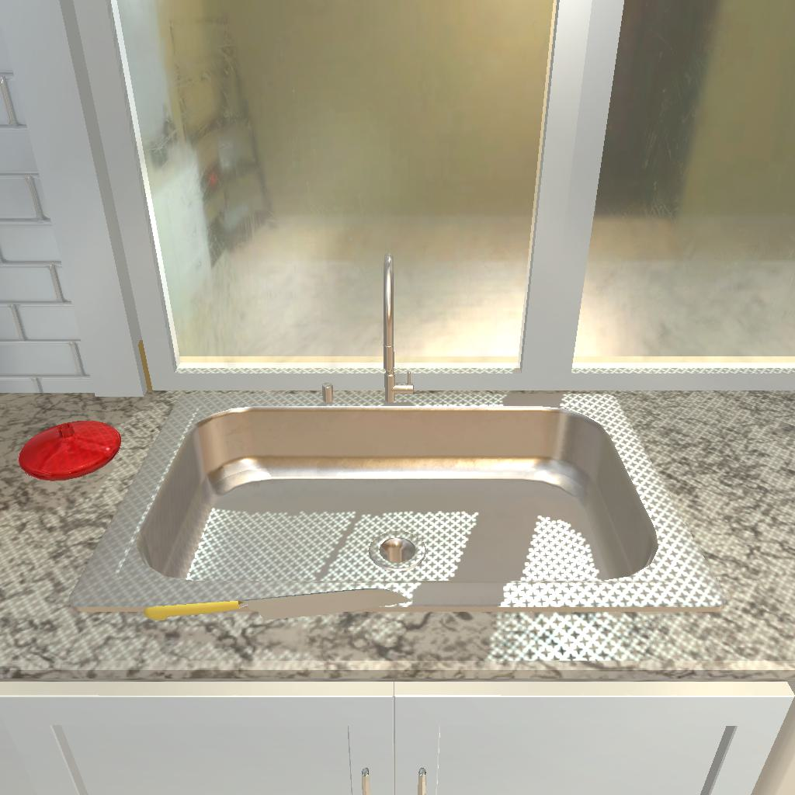

---------------------------------------------------------task: 16---------------------------------------------------------
--------------------------------------------------------------------------------------------------------------------------------------------------------------------
--------------------------------------------------------------------------------------------------------------------------------------------------------------------
Step:--------------------------------------------------------------------------6-------------------------------------------------------------------------------
----------------------------------------
VLM Prompt:
Image1:
Image2:
**Instruction**
1. Analyze the provided images to identify all visible household objects and compare the difference between images (e.h. whether the object is opened or not and taken on hand or not), focusing on those relevant to the task description "put a cool pan in sinkbasin."
2. Use the analysis of images and the task hint "The agent must find an object of the desired type, pick it up, go to a fridge, cool the object with the fridge, then find the correct location to place it, and put it down there. The agent does not need to use the fridge button or open the fridge to cool the object, and the agent just needs to do action that is "cool the object with the fridge"." to answer the question: what is the most reasonable action in the choices for the task description "put a cool pan in sinkbasin"?
3. Decide and write the answer using the template: The answer is: (i): , where i is the real number. If there is no desired object in images, search every place based on **Initial Observation** to find the object. And if no one is exactly correct, choose a similar answer.
**Initial Observation**
You are in the middle of a room. Looking quickly around you, you can see cabinet (1-9), countertop (1-3), drawer (1-9), stoveburner (1-4), microwave (1), sink (1), fridge (1), toaster (1), coffeemachine (1), sinkbasin (1), shelf (1-3), garbagecan (1)
**Answer Choices**
(1): go to cabinet 1
(2): go to countertop 1
(3): go to cabinet 2
(4): go to countertop 2
(5): go to drawer 1
(6): go to drawer 2
(7): go to drawer 3
(8): go to drawer 4
(9): go to stoveburner 1
(10): go to drawer 5
(11): go to stoveburner 2
(12): go to stoveburner 3
(13): go to stoveburner 4
(14): go to cabinet 3
(15): go to cabinet 4
(16): go to microwave 1
(17): go to cabinet 5
(18): go to cabinet 6
(19): go to cabinet 7
(20): go to sink 1
(21): go to fridge 1
(22): go to toaster 1
(23): go to coffeemachine 1
(24): go to cabinet 8
(25): go to drawer 6
(26): go to drawer 7
(27): go to drawer 8
(28): go to shelf 1
(29): go to shelf 2
(30): go to countertop 3
(31): go to shelf 3
(32): go to drawer 9
(33): go to cabinet 9
(34): go to garbagecan 1
(35): take vase 1 from sinkbasin 1
(36): take knife 1 from sinkbasin 1
(37): take faucet 1 from sinkbasin 1
(38): examine sinkbasin 1
**Answer**
Let's think step by step by following the instructions.
----------------------------------------
----------------------------------------
Original Response:
Image Analysis:
- Image 1 shows a stove with two kettles on top, a salt shaker, and a pan on the countertop.
- Image 2 shows a sink with a red lid and a yellow sponge in the sinkbasin.
Comparison:
- The pan from Image 1 is not visible in Image 2, indicating it may have been moved.
- The task is to "put a cool pan in sinkbasin," so we are looking for a pan to be cooled and then placed in the sinkbasin.
Task Hint Analysis:
- The agent does not need to interact with the fridge buttons or open it; they just need to perform an action to "cool the object with the fridge."
Based on the analysis and the task hint, the most reasonable action to find a pan and then put it in the sinkbasin would be to first go to the location where the pan is likely to be found. Since we see a pan on the countertop in Image 1, the most reasonable action would be to go to the countertop where the pan is located.
The answer is: (2): go to countertop 1
----------------------------------------
----------------------------------------
>>> Refine Original VLM Response and Get Pure Action: go to countertop 1
----------------------------------------
-----------------------------------------------------------------
Running time: 12.703715562820435 seconds
Total Money: 7.5304000000000055
-----------------------------------------------------------------
-----------------------------------------------------------------
Text Observation:You arrive at loc 1. On the countertop 1, you see a pan 1, a bread 1, a tomato 1, a spoon 1, a butterknife 1, a saltshaker 1, and a cup 1.
-----------------------------------------------------------------
UNSUCCEED